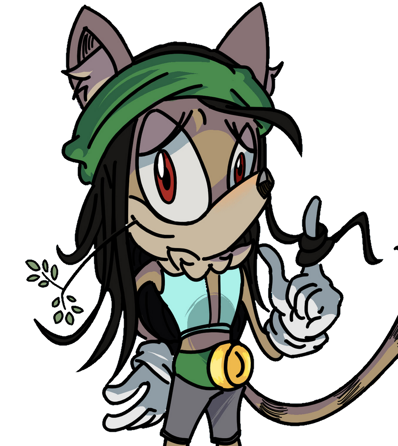
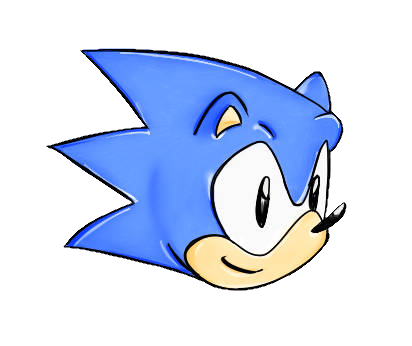
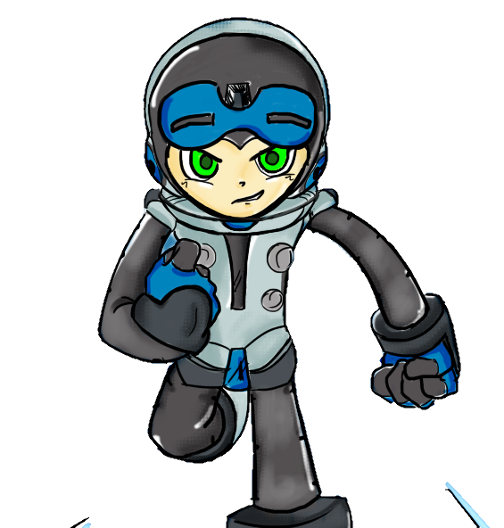
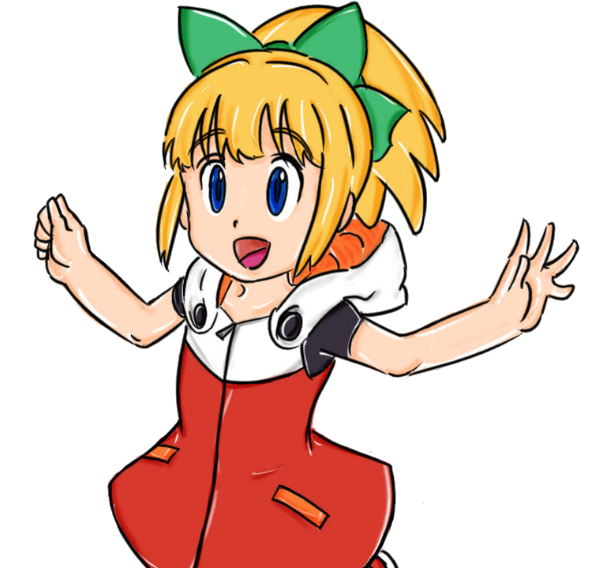
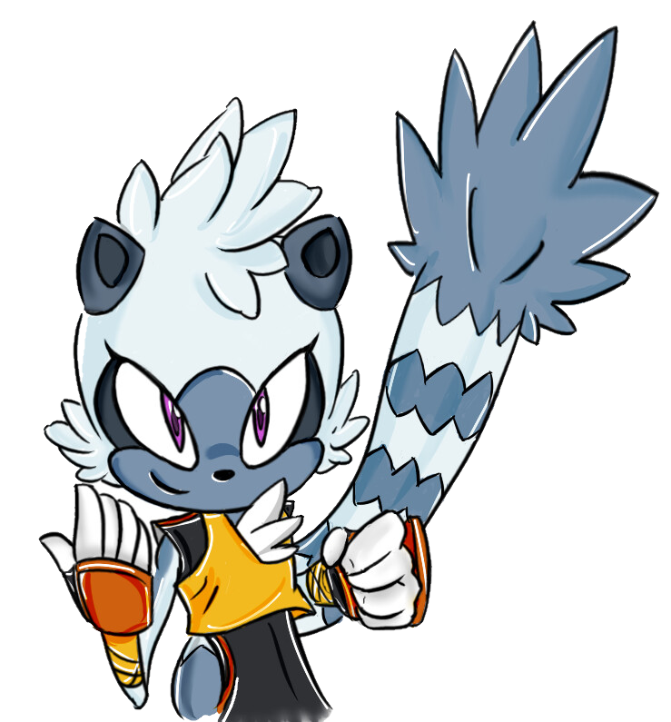
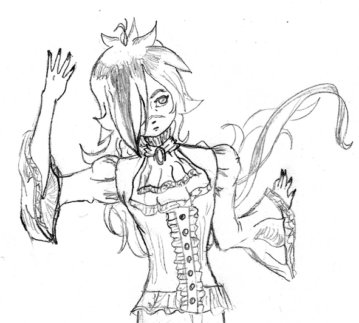
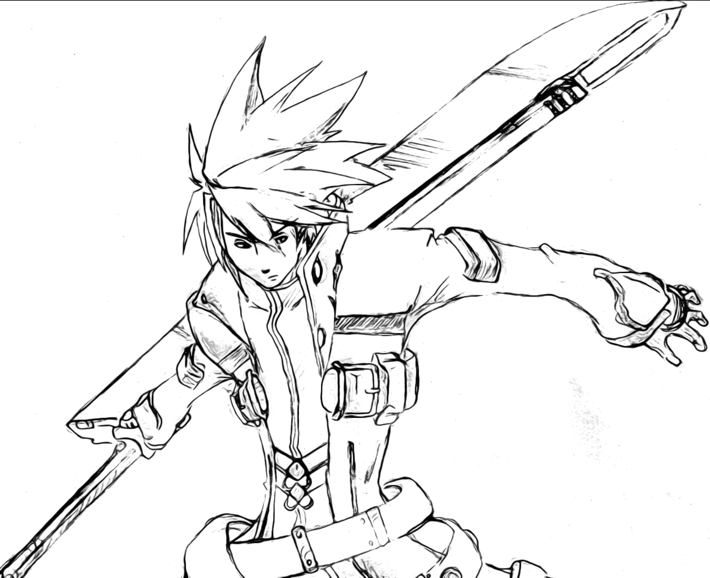

Digital Drawing
I have been drawing digitally since 2014. I started with a Wacom Bamboo tablet and later switched to a Wacom Intuos. I use Krita for most of my drawings, but I also use Gimp for some projects. I have been focusing on character design and fan art, but I also enjoy drawing original characters and concepts.






